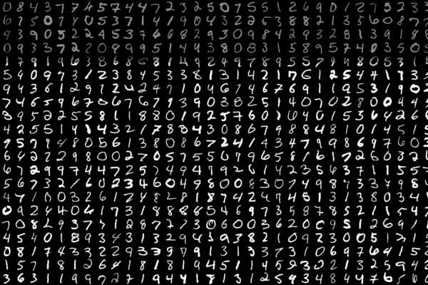

They call me 
Hello!
정보 낚는 어부 J입니다.
낚시, 좋아하시나요?주나라 강태공은 물고기가 아니라 세월을 낚았다죠?
저는 범람하는 자료의 바다에서, 진귀하고 흥미로운 알짜배기 정보를 낚습니다.
데이터 수집, 분석, 시각화까지.
세상 가득한 각종 정보를 낚는 최고의 낚시바늘 J가 되겠습니다.
S K I L L S
통계분석
- Python3, NumPy, Pandas, Tensorflow
- R3.5.1, MATLAB
- ANOVA, K-NN, ConvNet, LSTM
웹디자인
- HTML5, CSS3, JS
- Ruby 2.3.3, Rails 5.1.6, Bootstrap 4.1.3
기타
- C++, Java SE6, Visual Basic, Gephi0.9.2
1
스팀 평점 예측 모델
마이닝
R3.5.1, rvest
포매팅
R3.5.1, XML
모델링
R3.5.1, Python3, Tensorflow
시각화
Gephi0.9.2
시장 최대 규모의 Digital Distribution Platform인 Steam에 등록된 모든 게임의 정보를 긁어와 K-Nearest Neighbor 알고리즘으로 게임을 긍정적인 리뷰과 부정적인 리뷰 두 클래스로 나누도록 학습시켰습니다. 이를 통해 게임의 평균 리뷰가 추천일지 비추천일지 예측하는 모델을 짜보았습니다.
2
PlayDB 공연 정보 크롤러
마이닝
R3.5.1, XML, plyr, rvest
포매팅
R3.5.1, XML, plyr
모델링
-
시각화
HTML5, CSS3, Javascript, Ruby on Rails
국내 최고의 공연 데이터베이스 사이트인 playdb.com에 등록된 콘서트, 뮤지컬, 페스티벌 등 모든 정보를 긁어와 json, html, csv 중 원하는 형태의 파일로 보여주고 저장할 수 있게 해주는 도구를 만들어보았습니다.
3
카이스트 교수진 네트워크

마이닝
-
포매팅
R3.5.1
모델링
-
시각화
Gephi0.9.2, Sigma.JS, Javascript, HTML5, CSS3
2015년 기준 KAIST의 모든 교수의 학부-석사-박사 진학 과정에서 나타나는 전공 변경의 시각화입니다. 원본 데이터는 KAIST 교무팀에 컨택하여 입수하였습니다. 이후 R로 데이터를 정규화하고 용도에 맞게 개선하였습니다. 원본 데이터를 R3.5.1에서 중복되는 열, 비어있는 열을 삭제한 뒤 띄어쓰기나 대소문자 등 형식이 다른 과명칭을 통일시켰습니다. 그 뒤 개인정보를 비식별화하였으며, 그 뒤에 다시 발생하는 중복열은 통합하여 edge weight 행에 가산하였습니다. 이렇게 기본적인 정규화를 진행한 뒤 Gephi0.9.2에서 SigmaExporter0.9.0 플러그인을 사용하여 HTML5 인터렉티브 네트워크로 내보냈습니다. 이후 가독성을 높이고 전체적으로 더 나은 UX를 제공하기 위해 index.html과 style.css, config.json를 가볍게 수정하였습니다.
4
숫자 필기 인식 시스템

마이닝
-
포매팅
Python3, pandas, numpy
모델링
Python3, keras
시각화
Python3, matplotlib
사람이 손으로 쓴 0부터 9까지의 숫자를 이미지 형태로 대량 모아놓은 데이터를 보고 학습한 뒤, 새로운 숫자 이미지를 입력 받으면 어떤 숫자인지 출력하는 딥러닝 모델입니다.
Python3로 작성되었으며, MNIST 데이터베이스에서 train data와 test data를 받아왔습니다. Keras의 ImageDataGenerator로 부족한 데이터를 보강하였으며, 이후 데이터를 normalize하였습니다.
준비가 끝난 데이터는 keras의 convolutional network, max pooling과 batch normalization 과정을 수차례 거친 뒤 RELU와 Softmax activation 함수를 통해 결론에 도달합니다.
Evaluation 결과 인식 정확도는 99.9%였습니다.
Python3로 작성되었으며, MNIST 데이터베이스에서 train data와 test data를 받아왔습니다. Keras의 ImageDataGenerator로 부족한 데이터를 보강하였으며, 이후 데이터를 normalize하였습니다.
준비가 끝난 데이터는 keras의 convolutional network, max pooling과 batch normalization 과정을 수차례 거친 뒤 RELU와 Softmax activation 함수를 통해 결론에 도달합니다.
Evaluation 결과 인식 정확도는 99.9%였습니다.
5
트위터 워드 클라우드
마이닝
R3.5.1, rtweet
포매팅
R3.5.1, tidytext, dplyr, stringr
모델링
-
시각화
R3.5.1, wordcloud2
원하는 해시태그를 검색하면 해당 해시태그를 가진 트윗 N개를 긁어와 발생 빈도에 따라 크기를 결정한 뒤 워드 클라우드 형태로 출력합니다. R.3.5.1을 사용하였으며, rtweet 패키지를 이용해 트위터 개발자 계정에 할당되는 API로 트위터를 매우 쉽게 긁어올 수 있었습니다. 역시 tidytext와 dplyr, stringr 등의 패키지를 사용해 rtweet이 긁어온 데이터를 용도에 알맞는 형식으로 변환하였고, wordcloud2 패키지를 이용해 워드 클라우드를 생성하였습니다.
This page is
Powered by
- Open Sans Steve Matteson
- Lato Łukasz Dziedzic
- Noto Sans KR Google
- Raleway Matt McInerney
- Sunflower JIKJISOFT
- Source Sans Pro Paul D. Hunt
- Mirza KB Studio
- Font Awesome Dave Gandy
- Bootstrap 4.1.3 MIT
- jQuery One Page Scroll 1.3.1 Pete R.
Feel free to
Contact Me
Copyright © Jaewoo An